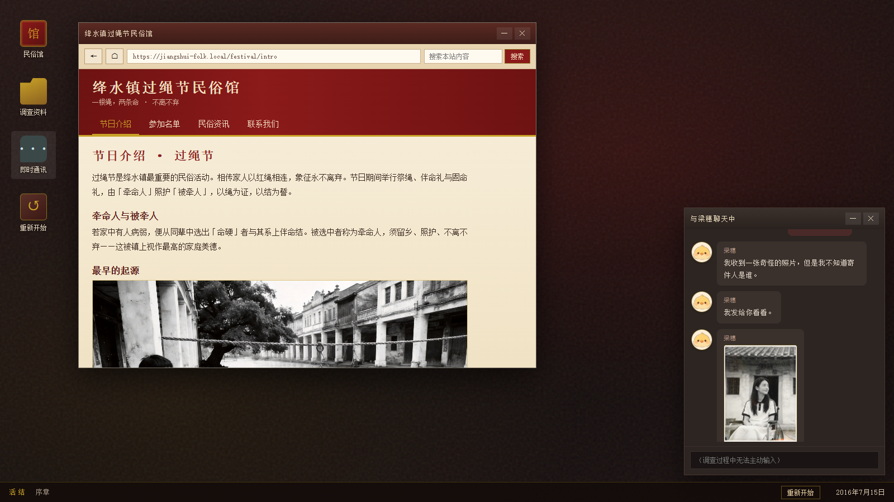
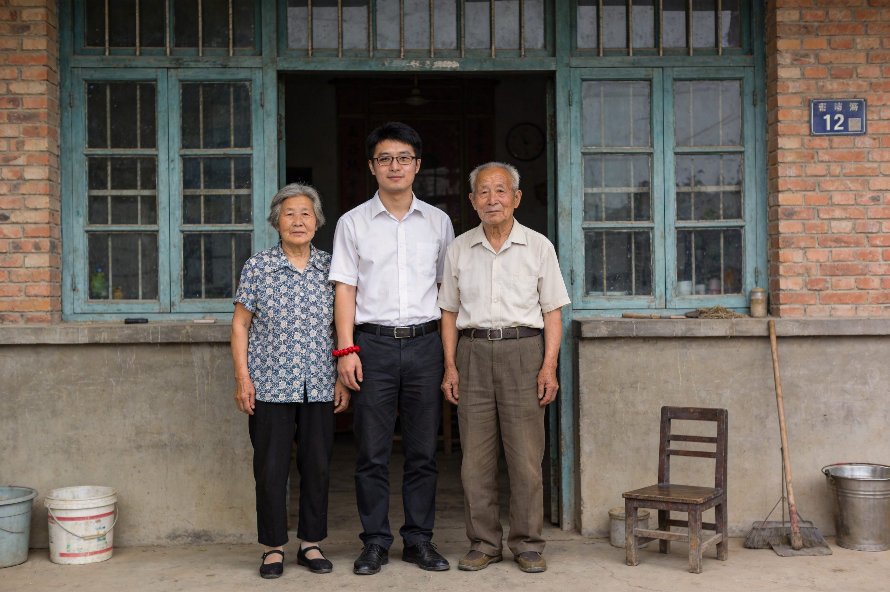

01 第一章：背景调查与小葵姐弟
从官方民俗叙事进入，再把调查落到“一个人是否拥有选择”。
玩家先通过民俗馆网页、新闻关键词和人物资料认识过绳节：它表面上是祈福、牵系与守护，背后却不断把“留下”包装成正确选择。随后，小葵的毕业照、录取通知书和校门口照片建立她想离开镇子读书的现实处境；弟弟的画则补上更柔软的真相，他并不想拖住姐姐，而是希望姐姐背着书包走向自己的生活。
这一章的个人能力展示在于体验引导、图像伏笔和信息节奏：先让玩家理解操作规则，再通过照片背面、红绳、校车与弟弟视线，把“民俗祝福”转译成逐渐成形的压迫感。

